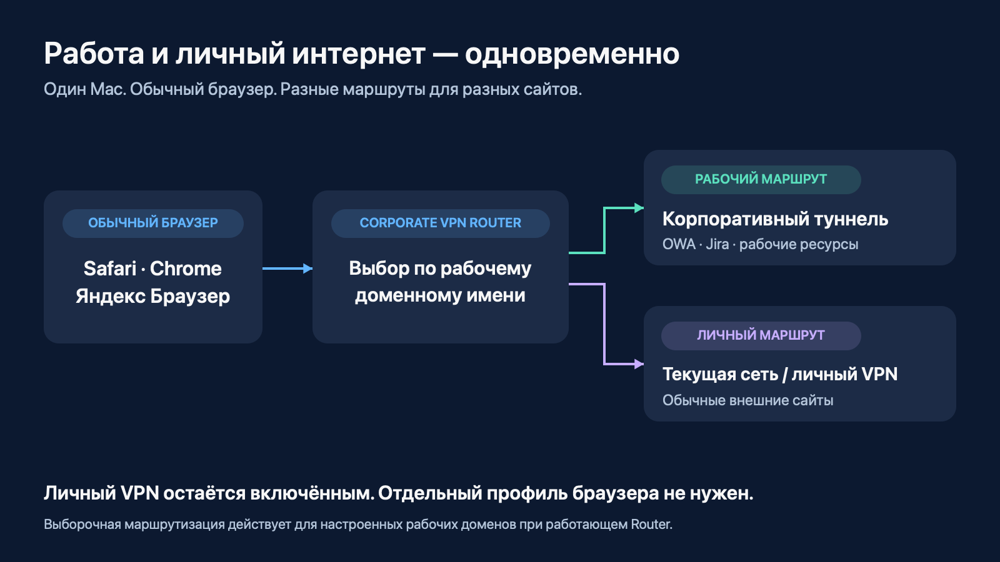
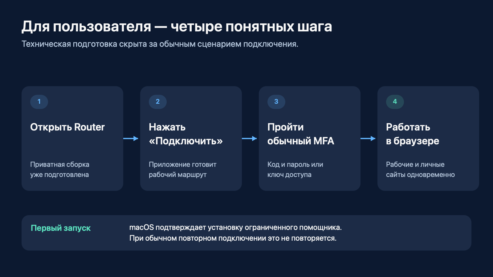
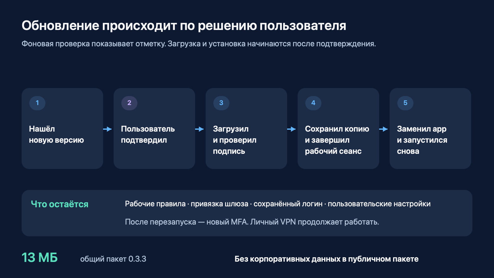
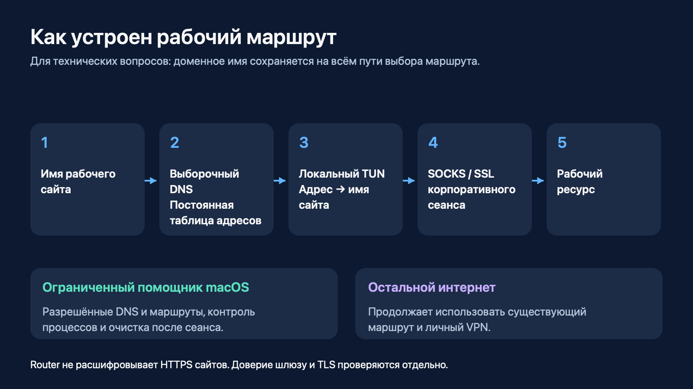

Corporate VPN Router
Рабочие сайты и личный интернет — одновременно
Версия 0.3.3 · Материал для выступающего · 12 ноября 2026
Главная мысль: открываем рабочие ресурсы в привычном браузере, сохраняя личный VPN включённым. Router выбирает маршрут по настроенным рабочим доменам, помогает подключиться и поддерживает обновления без неожиданной остановки работы.

Как пользоваться этим файлом: основной рассказ и мини-демонстрация рассчитаны на 7–10 минут. Текст в цитатах можно произносить почти дословно. Остальное — подсказки выступающему. FAQ нужен для обсуждения после показа, читать его подряд не надо. Схемы — поясняющие иллюстрации устройства приложения и пользовательского сценария.
Быстрый переход: рассказ · демонстрация · вопросы · техническая схема · шпаргалка · материалы проекта.
1. Начало: какую задачу решаем — 45 секунд
Покажу небольшое приложение для Mac, которое решает очень конкретную задачу. Мне нужно одновременно пользоваться рабочими сайтами и личным интернетом. При этом личный VPN уже включён, в браузере открыты нужные вкладки, и каждый раз переключать всю сеть неудобно.
Corporate VPN Router позволяет оставить этот сценарий привычным. Рабочие сайты получают корпоративный маршрут. Остальной интернет продолжает идти через текущую сеть и личный VPN.
Для пользователя это одно окно, кнопка подключения и обычный вход с MFA. Дальше можно открывать рабочую почту и Jira в своём браузере.
Показать: первую схему. Провести рукой или курсором от браузера к двум веткам. На этом этапе не объяснять DNS, TUN и root-helper: аудитории сначала нужен результат.
2. Что умеет Router — 1 минута
Здесь для меня важны четыре вещи.
Первая — рабочие и личные сайты доступны одновременно. Личный VPN продолжает работать.
Вторая — обычный браузер. В текущей схеме не нужен специальный профиль Chrome: можно пользоваться привычным окном Safari, Chrome или Яндекс Браузера.
Третья — понятное подключение. Приложение помнит логин и настройки, а новый рабочий сеанс начинается с нормального входа с MFA. Можно использовать код и пароль или ключ доступа через браузер, если этот способ доступен для учётной записи.
Четвёртая — приложение можно обновлять. Оно само проверяет наличие новой версии, но решение о загрузке и установке остаётся у пользователя. Рабочая сессия не заканчивается только потому, что вышел новый релиз.
| Возможность | Что это даёт пользователю |
|---|---|
| Маршрут по рабочим доменам | Рабочие сайты получают свой путь, личный интернет сохраняет существующий |
| Обычный браузер | Можно оставить привычные вкладки и профиль |
| Сохранённые логин и настройки | При повторном запуске не надо заново собирать конфигурацию |
| Новый MFA для нового сеанса | Вход остаётся осознанным действием пользователя |
| Встроенные обновления | Не нужно вручную переносить настройки в каждую новую версию |
| Очистка после сеанса | Приложение освобождает созданные им маршруты и DNS |
3. Как выглядит начало работы — 45 секунд

Коллеге передаётся приватный архив с уже подготовленным приложением. Он устанавливает его в папку приложений, открывает и проходит первичную подготовку.
Для работы с сетевыми маршрутами macOS один раз запрашивает установку системного помощника. Дальше обычный сценарий короткий: открыть Router, нажать «Подключить», пройти MFA и работать.
В окне виден статус подключения. Есть переход к рабочим сайтам и диагностика. Когда работа закончена, кнопка «Отключить» завершает корпоративный сеанс и убирает его сетевые настройки. Личный VPN остаётся включённым.
Показать: настоящее окно Router. Не открывать диагностику без вопроса — она отвлечёт от пользовательского сценария.
4. Мини-демонстрация — 2–3 минуты
Подготовить до начала
- Оставить Router 0.3.3 подключённым и личный VPN включённым.
- Подготовить в обычном браузере три вкладки: OWA, Jira и внешний HTTPS-сайт без чувствительного содержимого. Для рабочих ресурсов выбрать экран, который допустимо показывать аудитории.
- Закрыть лишние окна и включить режим без уведомлений, чтобы в трансляцию не попали сообщения.
- Открыть этот файл или
index.htmlи схемы. Демонстрировать окно приложения и нужные вкладки, а не весь рабочий стол.
Последовательность показа
| Время | Действие | Что сказать | Что должна увидеть аудитория |
|---|---|---|---|
| 0:00–0:20 | Показать статус личного VPN, затем окно Router | «Личный VPN включён. Корпоративный сеанс тоже подключён. Сейчас оба сценария работают рядом». | Статусы двух работающих подключений |
| 0:20–0:55 | Открыть и обновить безопасную страницу OWA | «Открываю рабочую почту в обычном браузере. Переключать сеть для этого не нужно». | Загрузку рабочего ресурса |
| 0:55–1:25 | Перейти в Jira, обновить допустимый для показа экран | «Теперь второй рабочий ресурс. Это тот же браузер и тот же сеанс». | Загрузку второго рабочего ресурса |
| 1:25–1:50 | Обновить внешний HTTPS-сайт | «И рядом работает личный интернет. Личный VPN я не отключал». | Открытие внешнего сайта |
| 1:50–2:20 | В Router нажать «Проверить обновления» | «Проверка доступна вручную. Если новая версия появится, приложение сообщит об этом; устанавливать её сразу не обязательно». | Результат проверки. Для актуальной 0.3.3 отсутствие новой версии нормально |
| 2:20–2:40 | Показать пункт «Проверять обновления автоматически» в меню, не менять настройку | «Можно оставить проверки при запуске и раз в сутки или отключить их и проверять вручную». | Управление автопроверкой |
| 2:40–3:00 | Вернуться к схеме обновления | «Сам переход между версиями уже выполнен. Покажу, что происходит при установке». | Схему следующего раздела |
Заметка для выступающего. Наличие открытых страниц показывает пользовательский результат. Точный выбор маршрута подтверждался отдельно диагностикой; открытая вкладка сама по себе не является доказательством сетевого пути.
Если времени только минута: окно Router → обновить OWA → обновить внешний сайт → одна фраза про обновления. Jira и меню можно пропустить.
Если хотят увидеть сам вход: выделить ещё 1–2 минуты. Штатно отключить Router, дождаться завершения, снова нажать «Подключить» и пройти новый MFA. Пароль и код вводить вне демонстрации экрана. Для основного короткого показа достаточно уже работающего сеанса.
Если страница задержалась: один раз повторить открытие. Если не помогло, сказать: «В этой сети сейчас задержка. Покажу устройство сценария и зафиксированный результат, а соединение проверю отдельно». Перейти к схеме. Во время выступления не менять сертификаты, не запускать переустановку и не повторять MFA бесконечно.
5. Как работают обновления — 1 минута

Обновления встроены через Sparkle — механизм обновлений для macOS. Приложение проверяет постоянный HTTPS-канал на GitHub. Для этого рабочий туннель не нужен.
Автоматическая проверка показывает отметку в существующем окне или меню. Загрузка начинается после действия пользователя. Перед установкой пакет проходит криптографическую проверку подписи.
Затем Router делает резервную копию, завершает свой рабочий сеанс, освобождает маршруты и DNS и только после этого разрешает замену приложения. Новая версия запускается из той же папки. Рабочие правила, привязка шлюза, логин и пользовательские настройки остаются на месте.
После обновления нужен новый вход с MFA. Личный VPN всё это время продолжает работать.
Один конкретный пример для рассказа:
Сегодня на первом Mac мы прошли два настоящих перехода через опубликованный канал: с 0.3.0 на 0.3.1 и затем на 0.3.3. После установки приложение запустилось из прежней папки, настройки сохранились, и я заново успешно подключился. Общий пакет 0.3.3 занимает около 13 мегабайт.
На сцене достаточно показать проверку и объяснить установку по схеме. На последней версии не будет предложения обновиться на саму себя. Полный переход уже подтверждён отдельным протоколом.
6. Завершение — 30 секунд
Получился простой повседневный сценарий: запускаю Router, прохожу MFA и работаю с корпоративными сайтами в обычном браузере. Личный VPN остаётся включённым.
Для первых коллег подготовлен приватный архив. Следующие версии приходят через встроенное обновление и сохраняют индивидуальную настройку. Пользователь сам выбирает момент установки.
Теперь могу показать конкретный сценарий или ответить на вопросы — про подключение, маршруты, безопасность и обновления.
Ответы на ожидаемые вопросы
Пользовательский сценарий
1. Зачем это нужно, если Check Point уже установлен?
Router добавляет удобный сценарий выборочной работы: настроенные корпоративные сайты идут через рабочий сеанс, а остальной интернет сохраняет текущий маршрут. Официальный Check Point остаётся установленным и используется при подготовке и проверке доверия шлюзу. Во время работы Router не требуется поднимать параллельно полный туннель официального клиента.
2. Это два VPN одновременно? Они не конфликтуют?
В показанном сценарии одновременно работают личный VPN и отдельный корпоративный сеанс Router. Router добавляет адресные маршруты для выбранных рабочих ресурсов, сохраняя существующий маршрут остального интернета. Совместная работа с Sota проверена на первом Mac; для другой комбинации клиентов разумно повторить тот же короткий сценарий.
3. Можно пользоваться своим браузером, закладками и вкладками?
Да. Текущий механизм работает через сетевые настройки macOS для выбранных доменов. Отдельный профиль Chrome и ручной прокси для обычного показа не нужны. Сценарий рассчитан на обычное разрешение имён через систему; собственный DNS в приложении может потребовать отдельной проверки.
4. Какие ресурсы показываем? А Confluence?
В основном показе — OWA и Jira вместе с внешним HTTPS-сайтом. Для Confluence остаётся отдельный вопрос доступности, поэтому его не включаем в список подтверждённых результатов этой версии. Маршрутизация настраивается по рабочим доменам, но доступность конкретного сервиса проверяется отдельно.
5. Нужно вводить пароль каждый раз? Что сохраняется?
Сохраняются логин и пользовательская конфигурация. Для нового рабочего сеанса нужен новый вход с MFA. Router не воспроизводит сохранённые пароль и одноразовый код после обновления или переподключения. Доступны предусмотренные интерфейсом способы входа: код с паролем и ключ доступа в браузере.
6. Что надо сделать коллеге при первой установке?
Получить приватный подготовленный архив, распаковать приложение и установить в /Applications или ~/Applications. При первой подготовке подтвердить системного помощника и пройти новый MFA. Официальный Check Point должен оставаться установленным и готовым. Общий ZIP из публичного релиза предназначен для обновления уже подготовленного Router.
7. Каждый раз нужен пароль администратора?
Нет, при обычном повторном подключении помощник уже установлен. Администратор нужен для первичной установки или реального восстановления системного компонента. Отдельный запрос при замене приложения в защищённой /Applications зависит от владельца и прав папки.
8. Работает с AdGuard?
На втором Mac с включённым AdGuard предыдущая проверенная основа прошла два полных рабочих сеанса и переподключение: корпоративные DNS, OWA, Jira и личный HTTPS работали. Эти сетевые механизмы сохранены в 0.3.3. Сам новый механизм обновлений на втором Mac проверяется отдельно; результат первого Mac мы на него не переносим.
9. Можно добавить ещё рабочий сайт?
Рабочие правила задают, какие домены обслуживает Router. Новый ресурс надо включать вместе с его необходимыми доменами и проверять доступ. Это изменение конфигурации, а не обещание, что любой введённый URL автоматически станет доступен.
10. Будет ли работать быстрее?
Основная выгода — одновременный доступ и меньше ручных переключений. Скорость зависит от сети, личного VPN, шлюза и сервиса. Универсального прироста скорости мы не обещаем. Ограниченный повтор отдельных неудачных TCP-подключений помогает пережить часть временных отказов без повторения аутентификации.
Безопасность и устройство
11. Это обход MFA или корпоративных прав?
Вход с MFA сохраняется, права на рабочие ресурсы определяются корпоративной учётной записью и шлюзом. Router меняет локальную организацию маршрутов. Допустимость такого клиента в организации — отдельный вопрос согласования; успешная техническая демонстрация не означает корпоративную сертификацию.
12. Router читает содержимое HTTPS-сайтов?
Он видит нужные для маршрутизации доменные имена и сетевые соединения, но не расшифровывает HTTPS-содержимое сайтов и не подменяет их сертификаты. Доверие к корпоративному шлюзу и проверка TLS выполняются отдельно. Интеграция обновлений не переустанавливает сертификаты и не меняет доверие в Keychain.
13. Зачем системный помощник с root-правами?
macOS требует повышенных прав для установки выбранных маршрутов и DNS. Поэтому эти операции выполняет небольшой системный помощник с ограниченным интерфейсом. Он проверяет пользователя и точную подпись разрешённого клиента, выполняет предусмотренные сетевые действия и очистку. Возможности передать ему произвольную команду от root не добавлялись.
14. Куда пойдёт рабочий запрос, если корпоративный сеанс оборвётся?
Пока выборочная маршрутизация активна, рабочий запрос не переключается автоматически на личный путь при отказе корпоративного транспорта. При полном завершении Router его маршруты и DNS удаляются. Это защита активного рабочего сценария, а не постоянно действующий запрет любых корпоративных запросов во всей системе.
15. Работают все приложения и все протоколы?
Основной подтверждённый сценарий — рабочий TCP/HTTPS с настроенными доменами. Системная маршрутизация позволяет выйти за рамки одного браузера, но это не обещание поддержки любого сетевого стека. Прямые IP, UDP/QUIC, собственный DoH и Private Relay требуют отдельного рассмотрения.
16. Почему собственный клиент, а не настройка split tunneling в Check Point?
Если организация предоставляет подходящий поддерживаемый режим официального клиента, его стоит рассматривать первым. Здесь решается уже имеющийся сценарий на конкретной конфигурации Mac: отдельные рабочие домены рядом с личным VPN. Router использует самостоятельный SSL-транспорт с сохранённой доверенной привязкой шлюза и узкую локальную маршрутизацию. Это не официальный продукт Check Point.
17. Что происходит после сбоя или завершения приложения?
У помощника есть контроль жизненного цикла и очистка созданных Router сетевых настроек. При штатном отключении приложение ждёт завершения своих процессов. Перед обновлением дополнительно получает от помощника независимое подтверждение, что активных маршрутов и незавершённой очистки не осталось. Если это не подтверждено, замена приложения отменяется.
18. Почему приложение ещё вызывает предупреждение macOS?
Сборка имеет ad-hoc подпись, но не Developer ID и notarization. Поэтому при первом открытии возможен штатный запрос разрешения macOS. Подпись обновления защищает происхождение пакета и не заменяет доверие Apple к издателю. Gatekeeper и другие механизмы macOS ради установки не отключаются.
Обновления и распространение
19. Оно может внезапно обновиться посреди работы?
Нет. Автоматически выполняется только проверка при запуске и затем раз в сутки, если она включена. О новой версии сообщает отметка. Загрузка и установка начинаются после явного действия пользователя с предупреждением о завершении рабочего сеанса. Автопроверку можно выключить; ручная остаётся доступной.
20. Откуда приходит обновление? Нужен рабочий VPN или GitHub-аккаунт?
Из постоянной публичной HTTPS-ленты и пакетов GitHub Releases. Рабочий туннель и авторизация GitHub не нужны; в клиенте нет общего GitHub-токена. Доступность зависит от обычного доступа к GitHub в текущей сети. Неудачная проверка сама по себе не завершает рабочий сеанс.
21. Почему можно публиковать обновление, если приложение корпоративное?
Разделены код и частная подготовка. Первый архив передаётся приватно: в нём есть необходимые корпоративные настройки. Они сохраняются локально вне .app. Последующие общие пакеты содержат обновляемое приложение без корпоративных доменов, шлюза, CA и приватной политики помощника. Публикации предшествует проверка состава.
22. Как защищаемся от подмены обновления?
Лента и пакеты подписаны Ed25519; в приложении только публичный ключ. Пакет проверяется до распаковки. Закрытый ключ находится в Keychain машины выпуска. Настоящий пакет с неправильной подписью был отвергнут в тесте реального Sparkle, до запуска установки.
23. У всех будет окно «generate_appcast хочет использовать закрытый ключ»?
Нет. Это запрос на машине выпуска, когда автор подписывает новую версию. На компьютерах коллег нет закрытого ключа и утилита generate_appcast для получения обновлений не запускается. Пользовательское приложение проверяет подпись публичным ключом. Системные запросы на установку помощника или доступ к защищённой папке — отдельные случаи.
24. Настройки не потеряются? Не появится вторая копия?
Sparkle заменяет текущую .app в её исходной папке. Поддерживаются /Applications и ~/Applications. Конфигурация хранится отдельно, в Application Support, и сохраняется между версиями. При реальном переходе и новом MFA совпали все 19 проверенных контрольных сумм настроек, частной подготовки и помощника.
25. Что будет при отмене, обрыве загрузки или ошибке установки?
При отмене и обрыве загрузки установка не начинается, исходное приложение сохраняется. Перед заменой делается точная резервная копия. Отдельно проверен отказ финального перемещения файлов: старое приложение восстановилось в исходный путь, повторная установка прошла успешно. Откат вручную выполняется после штатной остановки, возвратом сохранённой .app в прежнюю папку, без замены пользовательских данных.
26. Почему установка раньше шла долго? Сколько теперь ждать?
Первый общий пакет занимал около 69 МБ; его загрузка в той сети заняла около пяти минут. В 0.3.3 удалены две неиспользуемые копии адаптера из общего пакета, и размер уменьшился примерно до 13 МБ. В последнем тесте загрузка до передачи проверенного пакета на распаковку заняла около 2,7 секунды. Это измерение одного запуска, не обещание времени всей установки в любой сети.
27. Обновляется ли системный помощник вместе с приложением?
Текущие совместимые обновления сохраняют установленного помощника, его разрешённые операции и проверку подписи клиента. Они не переустанавливают root-компонент через Sparkle. Изменение самого помощника потребует отдельного решения и объяснённого системного подтверждения.
28. Как выпускать следующую версию?
Собрать следующий номер, например 0.3.4, проверить состав общего пакета и совместимость помощника, подписать существующим ключом. Сначала опубликовать проверенный архив, затем подписанную ленту. Пройти обновление с предыдущей версии, проверить настройки и новый вход. Точные команды сохранены в инструкции выпуска; GitHub Actions для этого не используются.
29. Можно прямо сейчас раздавать всем и на любые Mac?
Для первых коллег подготовлен приватный стартовый архив 0.3.3 под Apple Silicon и macOS 13+. Начинать следует с этой сборки и короткой проверки на конкретном компьютере. Пакет не является универсальным установщиком для Intel, Windows или произвольной корпоративной конфигурации.
30. Что именно уже подтверждено?
На первом Mac — опубликованные переходы 0.3.0 → 0.3.1 → 0.3.3, проверка подписи, установка в прежнюю папку, сохранение конфигурации и новый успешный MFA. Личный VPN сохранил работу. На втором Mac с AdGuard ранее подтверждены два полных сеанса сетевой основы и переподключение. Это два разных набора результатов; оба полезны, но не подменяют друг друга.
Техническая схема для обсуждения

Если вопрос технический, объяснить в таком порядке:
- Выборочный DNS: для настроенного рабочего домена используется отдельный локальный путь разрешения имени.
- Постоянная таблица адресов: домен получает стабильный синтетический IP; таблица переживает перезапуск.
- Адресные маршруты и TUN: только выбранные адреса попадают в локальный виртуальный интерфейс. Адаптер восстанавливает исходное имя назначения.
- Рабочий транспорт: соединение проходит через локальный SOCKS и самостоятельный корпоративный SSL-сеанс; внутреннее разрешение и доступ выполняются по рабочему пути.
- Помощник: ограниченные привилегированные операции поддерживают DNS, маршруты и их очистку. Остальной интернет сохраняет текущий путь.
Коротко про устойчивость: для некоторых временных TCP-отказов до передачи прикладных данных есть ограниченная резервная попытка. Это не повтор OTP, не повтор пользовательской операции и не ослабление TLS. Исходная причина непостоянных TCP-отказов отдельно не установлена.
Шпаргалка на одну минуту перед выступлением
Одна фраза: «Рабочие сайты в обычном браузере, личный VPN остаётся включённым».
Три экрана: Router подключён → OWA и Jira → внешний сайт.
Три свойства обновления: решение пользователя → проверка подписи → сохранение настроек.
Четыре числа:
| Число | Точный смысл |
|---|---|
| 0.3.3 | Текущая подготовленная версия |
| ≈13 МБ | Общий пакет обновления 0.3.3; приватный стартовый архив больше |
| 2 перехода | 0.3.0 → 0.3.1 и 0.3.1 → 0.3.3 через опубликованный канал на первом Mac |
| 19 совпавших хешей | Проверенные файлы настроек, частной подготовки и помощника до и после обновления |
Если спросили про права: «Администратор нужен для первичной установки системного помощника. Обычное подключение работает с уже установленным помощником».
Если спросили про всплывающий Keychain: «Это подпись выпуска на моей машине. У коллег закрытого ключа нет».
Если спросили про готовность: «Основной сценарий можно показать сейчас. Для коллег есть приватный стартовый пакет и работающий канал следующих версий».
Если дали только 60 секунд на весь рассказ
Я сделал Corporate VPN Router для Mac, чтобы рабочие сайты и личный интернет были доступны одновременно. Личный VPN остаётся включённым, а настроенные рабочие домены получают корпоративный маршрут.
Пользователь открывает приложение, нажимает «Подключить», проходит обычный MFA и работает в привычном браузере. Сейчас покажу рабочую почту, Jira и внешний сайт рядом.
Для коллег уже подготовлен приватный архив. Дальнейшие версии приложение получает через встроенные обновления: проверяет подпись, сохраняет настройки и устанавливает только после решения пользователя. После обновления нужен новый MFA.
На этом Mac переход между опубликованными версиями уже прошёл, и сейчас работает 0.3.3.
Материалы проекта
- Публичный релиз общего обновления 0.3.3.
- Постоянная подписанная лента обновлений.
- Исходный код механизма обновлений.
- Инструкция выпуска и отката.
Стартовый преднастроенный архив передаётся коллегам приватно. В публичном релизе находится общий пакет для обновления уже подготовленной установки.
Материал описывает реализацию и результаты проверок проекта на 12 ноября 2026 года. Схемы можно использовать отдельно; файл index.html позволяет просматривать этот документ после скачивания вместе с папкой images.